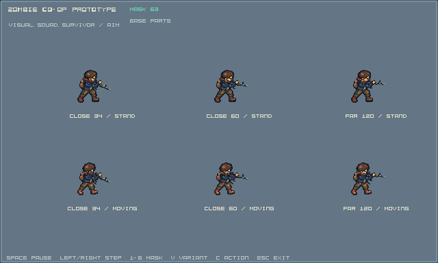
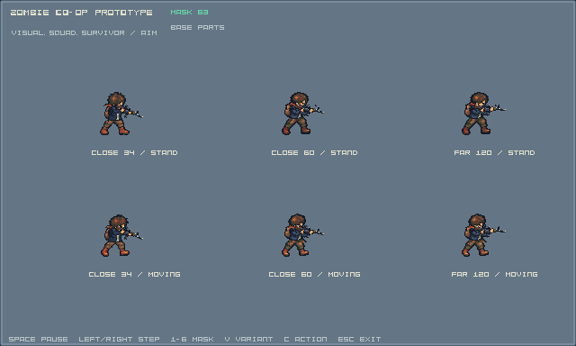
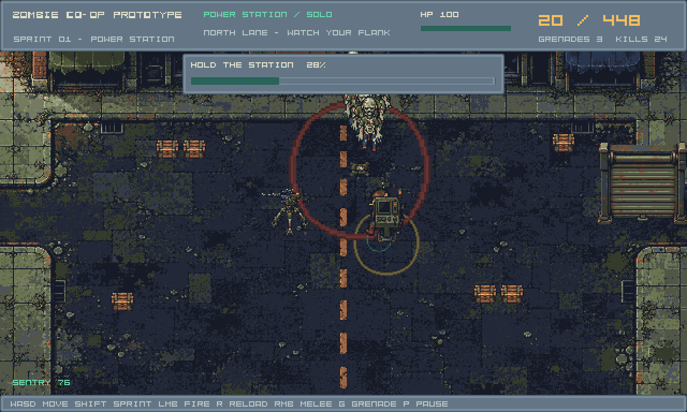
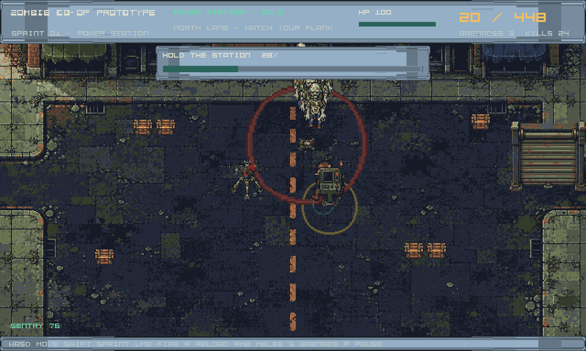

Complete Aim/Fire holds, standing and moving, through the encounter renderer and mount.
Implementation-owner evidence. Independent visual acceptance and full character/Sprint acceptance remain open.
Technical report · Revision lock · Matching game bundle · Source/consumer contract
Selected pose and transformed sockets. Native canvas640×384; scaling uses nearest pixels. Pose-clock playback is a review of sampled frames, not a recording of a human playtest.
The old bridge returned historical arms below its80-unit grip range and did not bind moving frames. The new bank selects a complete pose for all six cases here.34 units is representative of the returned screenshot; the original world/camera coordinates were not supplied.


Automated integrated encounters; these do not replace human playtests.

